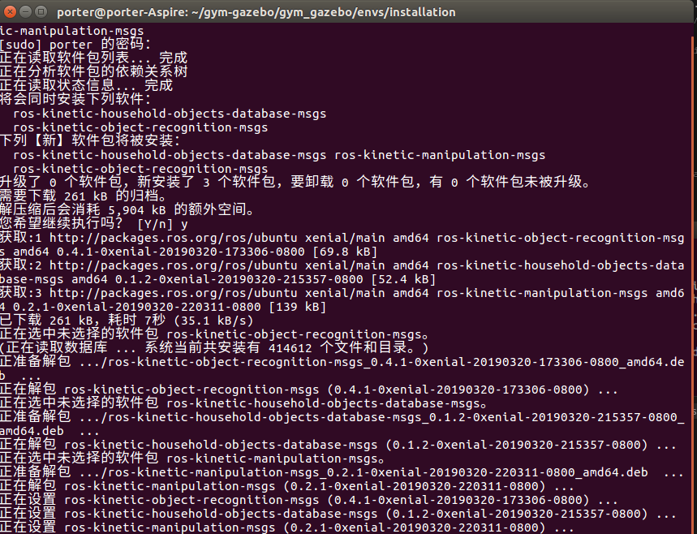
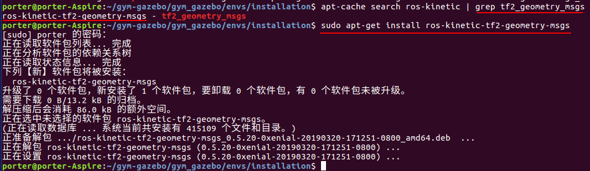
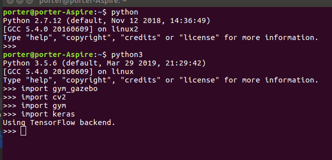

目录
本节会安装以下内容
- Kinetic
- ubuntu16
- gazebo8
- gym
- python3.5
- opencv3
- 安装 gazebo_ros_pkgs
- gym-gazebo
- gym-gazebo 测试
本节笔记主要记录ubuntu16 下安装gym-gazebo，包括其依赖的软件包安装。
我的代码仓库: https://github.com/porterpan/gym-gazebo
建议直接clone 我的软件仓库安装(直接适应kinetic版本安装不会出现警告和编译出错终止，当然可能会应为你的ros功能包缺失出错,这时只需要手动安装缺失的ros功能包，删除catkin_ws，再重复上次的安装过程即可)
cd ~
git clone -b master https://github.com/porterpan/gym-gazebo
实在官方的仓库中修改了: ~/gym-gazebo/gym_gazebo/envs/installation/gazebo.repos 文件内容.使整个安装适应ROS kinetic 环境。当然过程中如果缺ros功能包，需要自己额外安装功能包的。
缺失ros功能包会在编译时出现make error 红色的， 解决办法见ROS 中功能包的安装与查询 部分的方法安装好，然后remove -rf 安装路径中的catkin_ws 文件夹，然后重新上一步操作安装即可。
- [x] Edit By Porter, 积水成渊,蛟龙生焉。
第一部分安装gym-gazebo
下载安装文件
cd ~ #进入home目录
git clone -b master https://github.com/porterpan/gym-gazebo
安装依赖环境
Basic requirements:
- ROS Kinetic (/rosversion: 1.12.7) (安装选择这个sudo apt-get install ros-kinetic-desktop, 不要全装不然后面装gazebo8会相对麻烦点)
进入ROS官网的安装界面：http://wiki.ros.org/ROS/Installation
选择需要的版本 Kinetic 和系统平台，我们用的是 ubuntu 16.04 按照指导进行安装，这里注意要选择安装 ros-kinetic-desktop 版本，不要选 ros-kinetic-desktop-full，前者不包含 Gazebo ，后者包含了 Gazebo 7。后边安装 Gazebo 8 的时候还需要卸载掉，比较麻烦。 按照完 ROS 测试一下，在命令行中输入如下命令，看能否正常启动 ros master ：
作者：isl_qdu 链接：https://www.jianshu.com/p/2b4c68b9caaf 来源：简书 简书著作权归作者所有，任何形式的转载都请联系作者获得授权并注明出处。
- Gazebo 8.1.1 , 进入选择手动安装，不要选择Default installation: one-liner安装方式，否则会给你安装默认最新版本的gazebo.
- Python 3.5.2 (# I have yet to find out why though, because all the standard ROS stuff is in Python 2)
- OpenCV3, installed from sources for Python 3， pip3 或者手动安装(git clone https://github.com/Itseez/opencv.git)
- 安装 gazebo_ros_pkgs
前边安装的 ROS 与 Gazebo 是完全独立的两部分，要使他们之间互相通讯，还需要安装 gazebo_ros_pkgs 包。
进入官网安装界面：http://gazebosim.org/tutorials?tut=ros_installing
按照指导安装即可。我一般选择用 A: Install Pre-Built Debians 方式安装。需要注意的是，如果用如下命令安装报错：
sudo apt-get install ros-kinetic-gazebo-ros-pkgs ros-kinetic-gazebo-ros-control则需要指明 Gazebo 版本，将命令改为：
sudo apt-get install ros-kinetic-gazebo8-ros-pkgs ros-kinetic-gazebo8-ros-control就可以解决问题。
测试。安装结束，用如下命令测试：
roscore # 启动 ros master
rosrun gazebo_ros gazebo # 用 rosrun 方式启动 Gazebo
作者：isl_qdu 链接：https://www.jianshu.com/p/2b4c68b9caaf 来源：简书 简书著作权归作者所有，任何形式的转载都请联系作者获得授权并注明出处。
Install Sophus
cd ~
git clone https://github.com/stonier/sophus -b release/0.9.1-kinetic
cd sophus
mkdir build
cd build
cmake ..
make
sudo make install
echo "## Sophus installed ##\n"
安装gym-gazebo
cd ~
Gazebo gym
git clone -b master https://github.com/erlerobot/gym-gazebo
cd gym-gazebo
sudo pip2 install -e .
Dependencies and libraries
sudo pip3 install h5py
sudo apt-get install python3-skimage
install Theano
cd ~/
git clone git://github.com/Theano/Theano.git
cd Theano/
sudo python3 setup.py develop
install Keras
sudo pip3 install keras
Try it out (turtlebot simple env)
- Issues:
spacenav_node not compiling. CATKIN_IGNOREd. wiimote not compiling. CATKIN_IGNOREd. kobuki_qtestsuite not compiling. CATKIN_IGNOREd.
Agent dependencies:
# make sure to switch to bash, because the installation script
# hasn't been converted to ZSH yet
# and if you run it from ZSH the environmental variables
# that are set during the script's execution aren't preserved
cd gym_gazebo/envs/installation
./setup_kinetic.bash
./turtlebot_setup.bash
Run the environment with a sample agent:
# only execute this while still in the same bash as last step
cd ../../../examples/scripts_turtlebot/
python circuit2_turtlebot_lidar_qlearn.py
The result should look like this (after a few seconds):
... (messages about ROS and Gazebo starting up, until finally:) ...
[ INFO] [1508869124.880487247, 81.480000000]: GazeboRosKobuki plugin ready to go! [mobile_base]
EP: 1 - [alpha: 0.2 - gamma: 0.8 - epsilon: 0.9] - Reward: -87 Time: 0:00:05
EP: 2 - [alpha: 0.2 - gamma: 0.8 - epsilon: 0.9] - Reward: -155 Time: 0:00:05
EP: 3 - [alpha: 0.2 - gamma: 0.8 - epsilon: 0.9] - Reward: -165 Time: 0:00:05
EP: 4 - [alpha: 0.2 - gamma: 0.8 - epsilon: 0.89] - Reward: -156 Time: 0:00:06
EP: 5 - [alpha: 0.2 - gamma: 0.8 - epsilon: 0.89] - Reward: -162 Time: 0:00:06
EP: 6 - [alpha: 0.2 - gamma: 0.8 - epsilon: 0.89] - Reward: -161 Time: 0:00:07
EP: 7 - [alpha: 0.2 - gamma: 0.8 - epsilon: 0.89] - Reward: -167 Time: 0:00:07
EP: 8 - [alpha: 0.2 - gamma: 0.8 - epsilon: 0.89] - Reward: -166 Time: 0:00:08
EP: 9 - [alpha: 0.2 - gamma: 0.8 - epsilon: 0.89] - Reward: -154 Time: 0:00:08
EP: 10 - [alpha: 0.2 - gamma: 0.8 - epsilon: 0.89] - Reward: -157 Time: 0:00:09
第二部分：附录
ROS 中功能包的安装与查询
1.查询当前安装完成的所有包文件
rospack list
- 可以看到所有的ROS功能包都在/opt/ros/kinetic/share目录下，所以也可以使用如下命令查询
cd /opt/ros/kinetic/share/ or roscd turtlesim/ cd ..2.查询ros的所有功能包
apt-cache search ros-kinetic 或者说在不知道要安装功能包的确切名字的情况下找到目标包
apt-cache search ros-kinetic | grep rqt-通过管道线 与grep命令， 输出与关键字rqt-相关的行
再或者下述安装命令与Tab键结合
sudo apt-get install ros-kinetic-rqt-系统输出相应提示。 前述所有内容中，rospack list 与sudo apt-get install ros-kinetic-rqt- +Tab键使用最方便。
安装错误解决
错误1：
错误1：错误提示：
在moveit编译时找不到manipulation_msgsConfig.cmake manipulation_msgs-config.cmake文件 ```bash Could not find the required component 'manipulation_msgs'. The following CMake error indicates that you either need to install the package with the same name or change your environment so that it can be found. CMake Error at /opt/ros/kinetic/share/catkin/cmake/catkinConfig.cmake:83 (find_package): Could not find a package configuration file provided by "manipulation_msgs" with any of the following names:
manipulation_msgsConfig.cmake manipulation_msgs-config.cmake
作者：pd很不专业 来源：CSDN 原文：https://blog.csdn.net/qq_42145185/article/details/80975975 版权声明：本文为博主原创文章，转载请附上博文链接！

- 错误1：解决：
搜索这个功能包

能找到这个ros-kinetic-manipulation-msgs 包
```bash
sudo apt-get install ros-kinetic-manipulation-msgs
对ros安装对应的manipulation_msgsConfig包, 完成安装后重新去编译一下你的moveit包就行了。

问题2
- 错误二：错误提示：
" CMake Error at /opt/ros/kinetic/share/catkin/cmake/catkinConfig.cmake:83 (find_package): Could not find a package configuration file provided by "tf2_geometry_msgs" with any of the following names:
tf2_geometry_msgsConfig.cmake
tf2_geometry_msgs-config.cmake
Add the installation prefix of "tf2_geometry_msgs" to CMAKE_PREFIX_PATH or set "tf2_geometry_msgs_DIR" to a directory containing one of the above files. If "tf2_geometry_msgs" provides a separate development package or SDK, be sure it has been installed."
- 错误二：解决：
先搜索这个需要安装的ros功能包
apt-cache search ros-kinetic | grep tf2_geometry_msgs
发现存在这个包
porter@porter-Aspire:~/gym-gazebo/gym_gazebo/envs/installation$ apt-cache search ros-kinetic | grep tf2_geometry_msgs
ros-kinetic-tf2-geometry-msgs - tf2_geometry_msgs
执行这个功能包的安装
porter@porter-Aspire:~/gym-gazebo/gym_gazebo/envs/installation$ sudo apt-get install ros-kinetic-tf2-geometry-msgs
[sudo] porter 的密码：
正在读取软件包列表... 完成
正在分析软件包的依赖关系树
正在读取状态信息... 完成
下列【新】软件包将被安装：
ros-kinetic-tf2-geometry-msgs
升级了 0 个软件包，新安装了 1 个软件包，要卸载 0 个软件包，有 0 个软件包未被升级。
需要下载 0 B/13.2 kB 的归档。
解压缩后会消耗 86.0 kB 的额外空间。
正在选中未选择的软件包 ros-kinetic-tf2-geometry-msgs。
(正在读取数据库 ... 系统当前共安装有 415109 个文件和目录。)
正准备解包 .../ros-kinetic-tf2-geometry-msgs_0.5.20-0xenial-20190320-171251-0800_amd64.deb ...
正在解包 ros-kinetic-tf2-geometry-msgs (0.5.20-0xenial-20190320-171251-0800) ...
正在设置 ros-kinetic-tf2-geometry-msgs (0.5.20-0xenial-20190320-171251-0800) ...
porter@porter-Aspire:~/gym-gazebo/gym_gazebo/envs/installation$

问题3：
- 问题3：错误提示
CMake Error at /opt/ros/kinetic/share/catkin/cmake/catkin_workspace.cmake:95 (message):
WARNING: Metapackage "ecl_tools" must buildtool_depend on catkin.
WARNING: Metapackage "ecl_tools" should not have other dependencies besides a buildtool_depend on catkin and run_depends.
WARNING: Metapackage "ecl_lite" must buildtool_depend on catkin.
WARNING: Metapackage "ecl_lite" should not have other dependencies besides a buildtool_depend on catkin and run_depends.
Packages "mav_msgs" not found in the workspace
- 问题3：解决
出现这个错误的原因是ecl升级，或这和你当前安装的ros版本不对应。造成了cmake版本比配。出错，方法是
打开gazebo.repos,修改如下部分：
ecl_lite:
type: git
url: https://github.com/stonier/ecl_lite
version: release/0.61-indigo-kinetic
ecl_navigation:
type: git
url: https://github.com/stonier/ecl_navigation
version: devel
ecl_tools:
type: git
url: https://github.com/stonier/ecl_tools
version: release/0.61-indigo-kinetic
(将ecl_core、 ecl_lite 和ecl_tools 的版本号（version）改成： release/0.61-indigo-kinetic）
不过最终解决还是建议你如果也是安装ros kenitic 直接复制我后面附录的gazebo.repos内容替换掉之前的
路径：
vim ~/gym-gazebo/gym_gazebo/envs/installation/gazebo.repos
gazebo.repos 内容修改
gazebo.repos 修改后的文件内容，使适应kinetic环境，进行安装。
repositories:
ar_track_alvar:
type: git
url: https://github.com/ros-perception/ar_track_alvar
version: kinetic-devel
mav_comm:
type: git
url: https://github.com/ethz-asl/mav_comm.git
version: master
catkin_simple:
type: git
url: https://github.com/catkin/catkin_simple.git
version: master
control_toolbox:
type: git
url: https://github.com/ros-controls/control_toolbox.git
version: kinetic-devel
ecl_core:
type: git
url: https://github.com/stonier/ecl_core
version: release/0.61-indigo-kinetic
ecl_lite:
type: git
url: https://github.com/stonier/ecl_lite
version: release/0.61-indigo-kinetic
ecl_navigation:
type: git
url: https://github.com/stonier/ecl_navigation
version: release/0.60-indigo-kinetic
ecl_tools:
type: git
url: https://github.com/stonier/ecl_tools
version: release/0.61-indigo-kinetic
driver_base:
type: git
url: https://github.com/ros-drivers/driver_common.git
version: indigo-devel
gazebo_ros_pkgs:
type: git
url: https://github.com/ros-simulation/gazebo_ros_pkgs
version: kinetic-devel
hector_gazebo:
type: git
url: https://github.com/tu-darmstadt-ros-pkg/hector_gazebo/
version: kinetic-devel
image_common:
type: git
url: https://github.com/ros-perception/image_common.git
version: hydro-devel
joystick_drivers:
type: git
url: https://github.com/ros-drivers/joystick_drivers.git
version: master
kobuki:
type: git
url: https://github.com/yujinrobot/kobuki
version: kinetic
kobuki_core:
type: git
url: https://github.com/yujinrobot/kobuki_core
version: kinetic
kobuki_desktop:
type: git
url: https://github.com/yujinrobot/kobuki_desktop
version: kinetic
kobuki_msgs:
type: git
url: https://github.com/yujinrobot/kobuki_msgs
version: kinetic
navigation:
type: git
url: https://github.com/ros-planning/navigation
version: kinetic-devel
pcl_ros:
type: git
url: https://github.com/ros-perception/perception_pcl.git
version: kinetic-devel
realtime_tools:
type: git
url: https://github.com/ros-controls/realtime_tools
version: kinetic-devel
ros_control:
type: git
url: https://github.com/ros-controls/ros_control
version: kinetic-devel
roslint:
type: git
url: https://github.com/ros/roslint
version: master
turtlebot:
type: git
url: https://github.com/turtlebot/turtlebot
version: kinetic
turtlebot_create:
type: git
url: https://github.com/turtlebot/turtlebot_create
version: master
turtlebot_simulator:
type: git
url: https://github.com/turtlebot/turtlebot_simulator
version: indigo
xacro:
type: git
url: https://github.com/ros/xacro
version: kinetic-devel
yocs_msgs:
type: git
url: https://github.com/yujinrobot/yocs_msgs
version: release/0.6-kinetic
yujin_ocs:
type: git
url: https://github.com/yujinrobot/yujin_ocs
version: kinetic
安装结束效果
vim ~/.bashrc
# 最后几行的环境应该是这样的
source /home/porter/gym-gazebo/gym_gazebo/envs/installation/catkin_ws/devel/setup.bash
export GAZEBO_MODEL_PATH=/home/porter/gym-gazebo/gym_gazebo/envs/installation/../assets/models
export GYM_GAZEBO_WORLD_MAZE=/home/porter/gym-gazebo/gym_gazebo/envs/installation/../assets/worlds/maze.world
export GYM_GAZEBO_WORLD_CIRCUIT=/home/porter/gym-gazebo/gym_gazebo/envs/installation/../assets/worlds/circuit.world
export GYM_GAZEBO_WORLD_CIRCUIT2=/home/porter/gym-gazebo/gym_gazebo/envs/installation/../assets/worlds/circuit2.world
export GYM_GAZEBO_WORLD_CIRCUIT2C=/home/porter/gym-gazebo/gym_gazebo/envs/installation/../assets/worlds/circuit2c.world
export GYM_GAZEBO_WORLD_ROUND=/home/porter/gym-gazebo/gym_gazebo/envs/installation/../assets/worlds/round.world
打开终端执行的效果如下图

gym-gazebo 测试
参见我的另一篇文章gym-gazebo安装后的测试